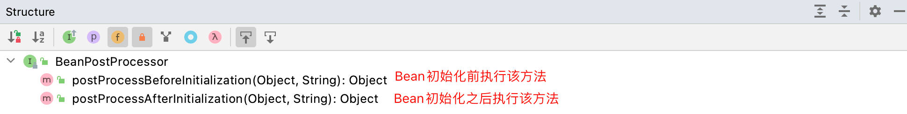
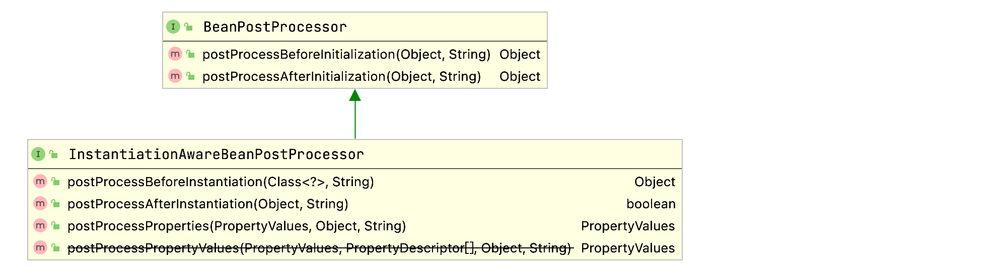
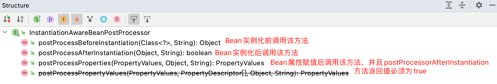
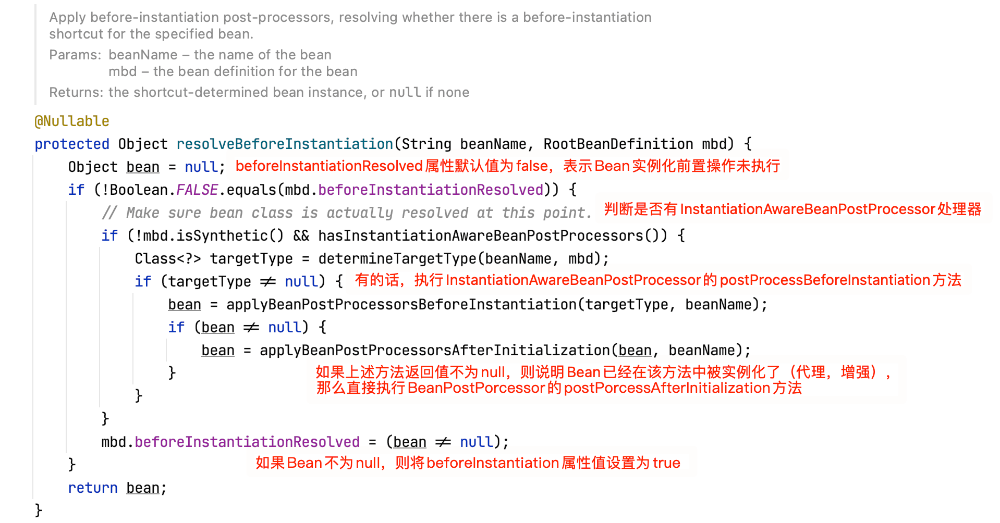
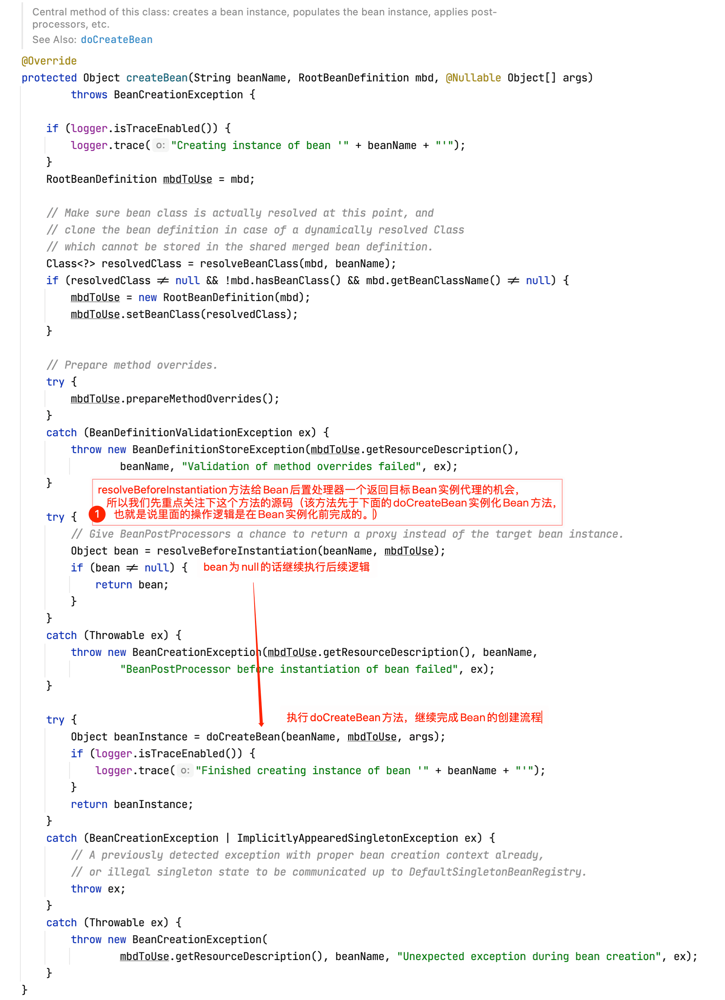
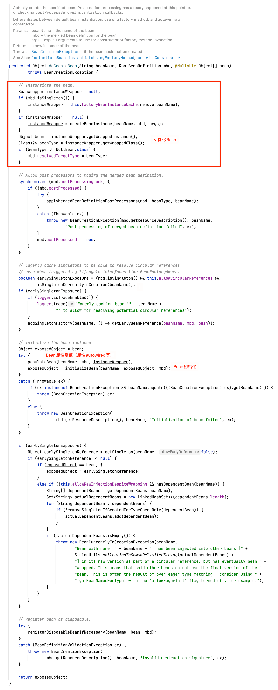
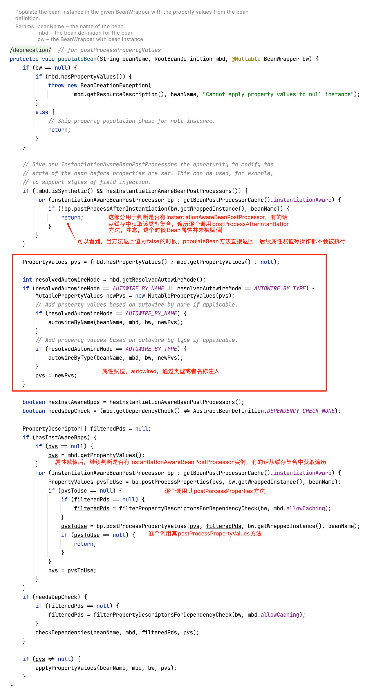
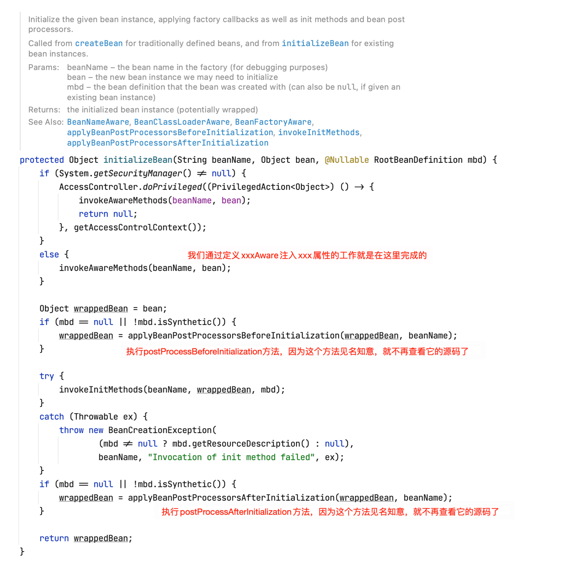
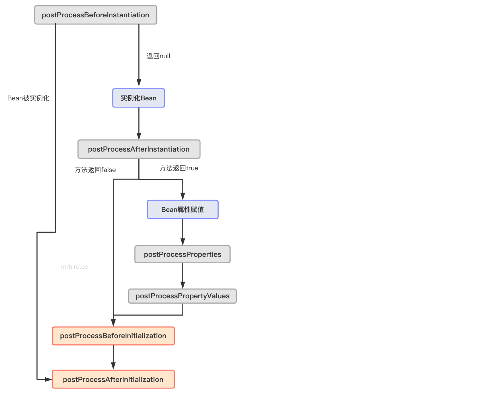

在深入学习Spring Bean生命周期一节中，我们学习了Bean后置处理器BeanPostProcessor，用于在Bean初始化前后插入我们自己的逻辑（Bean增强，Bean代理等）。今天偶然接触到BeanPostProcessor的子类InstantiationAwareBeanPostProcessor，用于Bean实例化前后处理。本节记录两者的区别以及简单原理分析。
两者比较
Initialization为初始化的意思，Instantiation为实例化的意思。在Spring Bean生命周期中，实例化指的是创建Bean的过程，初始化指的是Bean创建后，对其属性进行赋值（populate bean）、后置处理等操作的过程，所以Instantiation执行时机先于Initialization。
类关系
先来看看BeanPostProcessor的类结构：

InstantiationAwareBeanPostProcessor为BeanPostProcessor的子类，新增了三个额外的方法：


方法解析
BeanPostProcessor
postProcessBeforeInitialization(Object bean, String beanName)：bean：Bean实例；beanName：Bean名称。方法将在Bean实例的afterPropertiesSet方法或者自定义的init方法被调用前调用，此时Bean属性已经被赋值。方法返回原始Bean实例或者包装后的Bean实例，如果返回null，则后续的后置处理方法不再被调用。postProcessAfterInitialization(Object bean, String beanName)：bean：Bean实例；beanName：Bean名称。方法将在Bean实例的afterPropertiesSet方法或者自定义的init方法被调用后调用，此时Bean属性已经被赋值。方法返回原始Bean实例或者包装后的Bean实例，如果返回null，则后续的后置处理方法不再被调用。
InstantiationAwareBeanPostProcessor
postProcessBeforeInstantiation(Class<?> beanClass, String beanName)：beanClass：待实例化的Bean类型；beanName：待实例化的Bean名称。方法作用为：在Bean实例化前调用该方法，返回值可以为代理后的Bean，以此代替Bean默认的实例化过程。返回值不为null时，后续只会调用BeanPostProcessor的 postProcessAfterInitialization方法，而不会调用别的后续后置处理方法（如postProcessAfterInitialization、postProcessBeforeInstantiation等方法）；返回值也可以为null，这时候Bean将按默认方式初始化。postProcessAfterInstantiation(Object bean, String beanName)：bean：实例化后的Bean，此时属性还没有被赋值；beanName：Bean名称。方法作用为：当Bean通过构造器或者工厂方法被实例化后，当属性还未被赋值前，该方法会被调用，一般用于自定义属性赋值。方法返回值为布尔类型，返回true时，表示Bean属性需要被赋值；返回false表示跳过Bean属性赋值，并且InstantiationAwareBeanPostProcessor的postProcessProperties方法不会被调用。
执行时机对比
为了验证实例化和初始化的先后顺序，我们新建一个SpringBoot项目，版本2.4.0，依赖如下所示：
1 | <dependencies> |
Spring入口类名称为DemoApplication。新建MyBeanPostProcessor实现BeanPostProcessor接口：
1 |
|
因为对所有的Bean生效，所以为了方便观察输出，这里仅当Bean名称为demoApplication时才打印输出。
接着新建MyBeanInstantiationPostProcessor实现InstantiationAwareBeanPostProcessor接口：
1 |
|
启动程序，输出如下所示：
1 | post process before demoApplication instantiation |
如果将MyBeanInstantiationPostProcessor的postProcessAfterInstantiation方法返回值改为false，程序输出如下：
1 | post process before demoApplication instantiation |
原理解析
postProcessAfterInitialization和InstantiationAwareBeanPostProcessor的方法都和Bean生命周期有关，要分析它们的实现原理自然要从Bean的创建过程入手。Bean创建的入口为AbstractAutowireCapableBeanFactory的createBean方法，查看其源码：

resolveBeforeInstantiation方法源码如下所示：

上面方法返回的bean如果为空的话，AbstractAutowireCapableBeanFactory的createBean方法将继续往下执行doCreateBean方法：

查看doCreateBean方法源码：

其他部分和本节讨论内容关系不大（Bean生命周期其他部分），重点关注populateBean和initializeBean方法。查看populateBean方法源码：

接着查看initializeBean方法源码：

至此我们通过查看Bean生命周期相关源码弄清楚了BeanPostProcessor和InstantiationAwareBeanPostProcessor相关方法的执行时机以及原理。
上面源码的追踪其实不仅涉及到了BeanPostProcessor和InstantiationAwareBeanPostProcessor相关方法的执行时机以及原理，更是整个Bean生命周期创建过程，结合Spring-Bean生命周期这篇文章的流程再走一遍源码，你会对Bean的生命周期有更深的理解。
总结
下面通过一张流程图总结本文：
